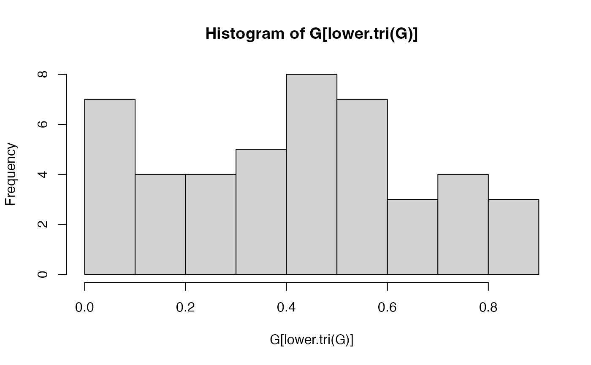

Define several simulation functions to be used in the demos of the package.
Usage
simulation_cor(group, cor_group, v = 1)
simulation_X(N, Cor)
simulation_DATA(X, supp, minB, maxB, stn)
compsim(x, ...)
# S3 method for class 'simuls'
compsim(x, result.boost, level = 1, ...)Arguments
- group
A numeric vector. Group membership of each of the variables.
- cor_group
A numeric vector. Intra-group Pearson correlation.
- v
A numeric value. The diagonal value of the generated matrix.
- N
A numeric value. The number of observations.
- Cor
A numeric matrix. A correlation matrix to be used for random sampling.
- X
A numeric matrix. Observations*variables.
- supp
A numeric vector. The true predictors.
- minB
A numeric value. Minimum absolute value for a beta coefficient.
- maxB
A numeric value. Maximum absolute value for a beta coefficient.
- stn
A numeric value. A scaling factor for the noise in the response. The higher, the smaller the noise.
- x
List. Simulated dataset.
- ...
For compatibility issues.
- result.boost
Row matrix of numerical value. Result of selecboost for a given c0.
- level
List. Threshold for proportions of selected variables.
Value
simulation_cor returns a numeric matrix.
simulation_X returns a numeric matrix.
simulation_DATA returns a list.
compsim.simuls returns a numerical vector.
Details
simulation_cor returns a numeric symetric matrix c whose order
is the number of variables. An entry \(c_{i,j}\) is equal to
\(i=j\), entries on the diagonal are equal to the v value
\(i<>j\), 0 if the variable i and j do not belong to the same group
\(i<>j\),
cor_group[k]if the variable i and j belong to the group k
simulation_X returns a numeric matrix of replicates (by row) of
random samples generated according to the Cor matrix.
simulation_DATA returns a list with the X matrix, the response vector Y,
the true predictors, the beta coefficients, the scaling factor and the standard deviation.
compsim.simuls computes recall (sensitivity), precision (positive predictive value), and several Fscores (non-weighted Fscore, F1/2 and F2 weighted Fscores).
References
selectBoost: a general algorithm to enhance the performance of variable selection methods in correlated datasets, Frédéric Bertrand, Ismaïl Aouadi, Nicolas Jung, Raphael Carapito, Laurent Vallat, Seiamak Bahram, Myriam Maumy-Bertrand, Bioinformatics, 2020. doi:10.1093/bioinformatics/btaa855
Author
Frederic Bertrand, frederic.bertrand@lecnam.net with contributions from Nicolas Jung.
Examples
N<-10
group<-c(rep(1:2,5))
cor_group<-c(.8,.4)
supp<-c(1,1,1,0,0,0,0,0,0,0)
minB<-1
maxB<-2
stn<-5
C<-simulation_cor(group,cor_group)
set.seed(314)
X<-simulation_X(10,C)
G<-abs(cor(X))
hist(G[lower.tri(G)])

set.seed(314)
DATA_exemple<-simulation_DATA(X,supp,1,2,stn)
set.seed(314)
result.boost = fastboost(DATA_exemple$X, DATA_exemple$Y, steps.seq = .7, c0lim = FALSE,
use.parallel = FALSE, B=10)
compsim(DATA_exemple, result.boost, level=.7)
#> [1] 0.6666667 0.6666667 0.6666667 0.6666667 0.6666667 1.0000000